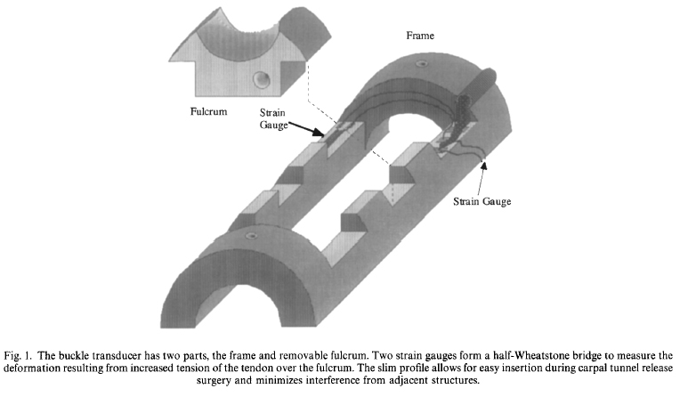
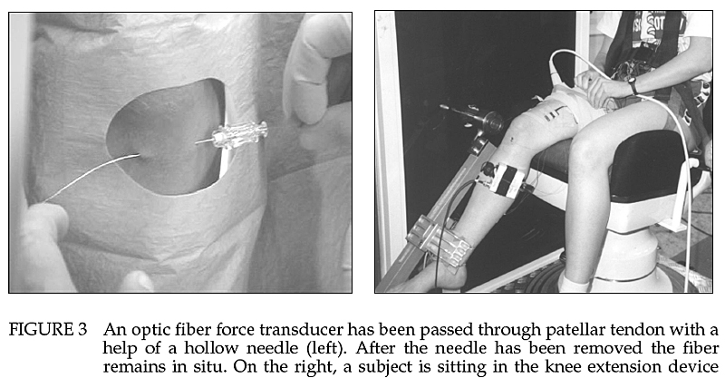
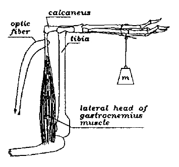
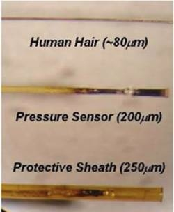
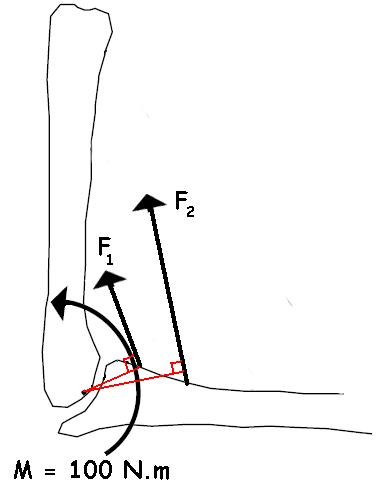
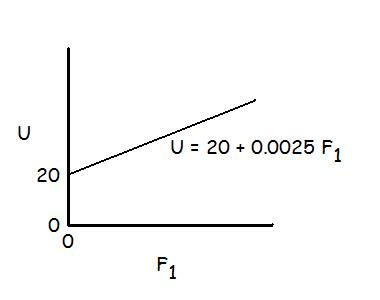
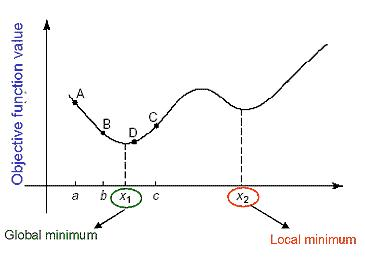
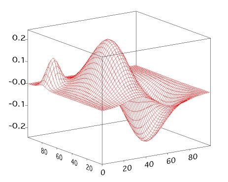

The Indeterminacy Problem and Optimization

In the previous lecture, we looked at the difference between joint reaction forces and bone-on-bone forces. Click here if you wish to review that lecture. In this lecture, we will look at various solutions to the indeterminacy problem. Briefly, the three equations of static or dynamic equilibrium allow the calculation of two joint reaction forces and either a single muscle force or a net joint moment of force. Since each human joint is crossed by several muscles, the solution to each muscle force is indeterminate because we do not have enough equations to solve for all of the unknowns.
Direct Measurement of Individual Muscle Forces
The use of inverse dynamics and linked segment modeling allows biomechanists to calculate net joint moments of force and joint reaction forces. The net joint moments were very useful for interpretations of muscular involvement and power calculations. There are some applications where individual muscle forces are required. In this section we look at invasive measurements.
1) Tendon Transducers:

- Buckle Transducers
- Mercury Strain Gauge Transducers
2) Fibre Optic Cable

3) Intra-muscular Pressure


Each of the above methods involves an invasive procedure that requires ethics approval to perform on humans. Such approval has limited most of these techniques to animal research.
Optimization
A non-invasive method for the determination of more than a single muscle force is to use a mathematical estimation based on the optimization of some criterion. The method assumes that the central nervous system would activate muscles according to an optimum strategy such that only one solution would exist. For example, the CNS could activate the muscles in such a way as to minimize the total muscle stress.

Example:
The diagram to the right shows a 100 N.m moment caused by two synergistic muscles. The CNS has an infinite combination of forces applied by F1 and F2 that would produce the 100 N.m moment. If we know that moment arm of F1 is 0.05 m and the moment arm of F2 is 0.10 m, then ...
[1] 100 = F1(0.05) + F2(0.10)
Recall that stress is force per cross-sectional area. Muscle size is often indicated by the physiological cross-sectional area (see muscle mechanics lecture). Let us assume that we know that the PCSA of F1 is 80 cm2 and the PCSA of F2 is 50 cm2.
The total muscle stress would be U = F1/80 + F2/50 N/cm2. If we choose to minimize the total muscle stress, there is only one unique solution that satisfies both equations.
Using equation [1] we get F2 = [100 - F1(0.05)] / 0.10. Simplifying we get F2 = 1000 - 0.5F1
Therefore we would minimize U = F1/80 + [1000 - 0.5F1]/50 = 20 + 0.0025F1

If we plot U as a function of F1, we can see that U is a minimum when F1 = 0 N. Actually U could be reduced below 20 if F1 is negative but muscle can only pull and a negative muscle force would be pushing. We can determine F2 by substituting the known value for F1 into equation [1] and F2 = 1000 N. Therefore, total muscle stress is minimized when F1 = 0 and F2 = 1000 N.
If we had more than two muscle causing the 100 N.m moment, we would need need a computer to try all possible combinations of forces in F1, F2, F3,...Fn to find the minimum stress.
For example, if we chose a third muscle F3 with a moment arm of 0.08 m and PCSA of 70 cm2, we would find that the minimum stress would be 17.85 with all of the force of 1250 N given to F3 and zero force to the other two muscles.
In linear optizations, it would seem that the CNS would select the muscle with the greatest product of moment arm and PCSA product to exert the entire moment. When biomechanists use electromyography to look at the activity of synergistic muscles, they never see the activity isolated to a single muscle. Others have used nonlinear optimization to yield more synergism such as the sum of muscle stress2.
Nonlinear Optimization:

If we chose the sum of muscle stress squared to be the criterion that the CNS would try to minimize, the equation would be: U = (F1/80)2 + (F2/50)2
Rearranging to isolate F1 as we did before yields: U = 400 - 0.4 F1 + 0.000256 F12
Solving for the minimum yields F1 = 780 N and F2 = 610 N
- allows synergist co contractions
- mathematical techniques to solve the optimization equations
- step size
- local versus global minimums
- search techniques

Problems With Optimization

- no antagonist co-contraction (except when minimum shear is a criterion)
- poor validation (EMG temporal patterns, cannot use measured moment)
- human body may change the optimization criterion during movement
The major advantage of optimizations is that they are easy to implement and can yield useful bone-on-bone forces in certain situations.